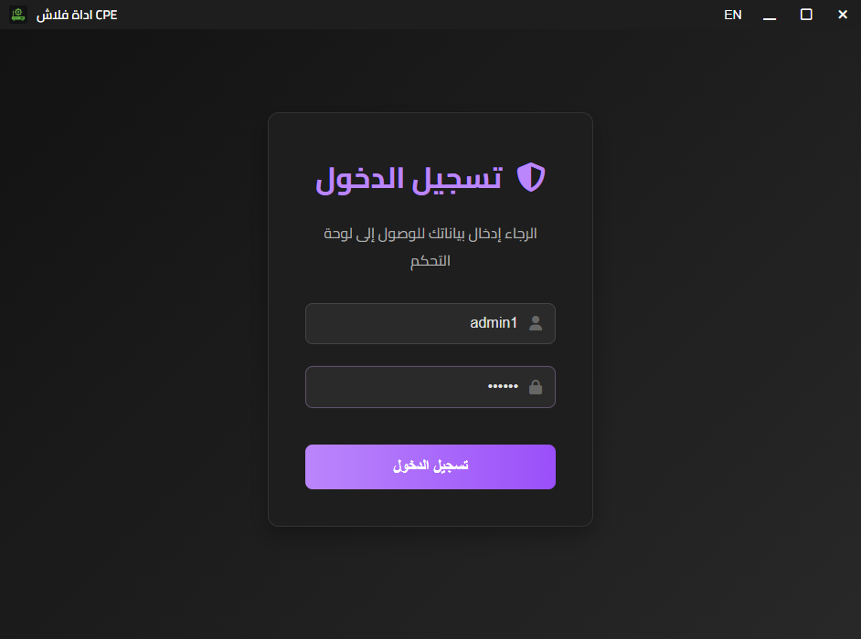
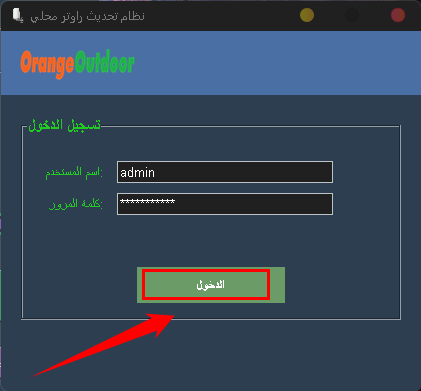
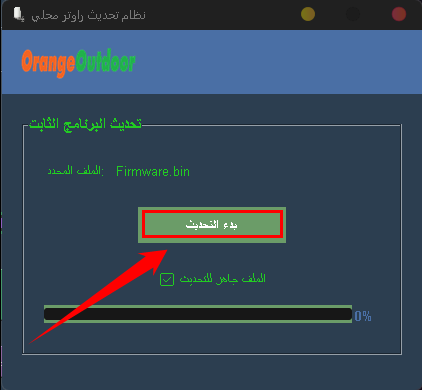

كيفية استخدام برنامج cpe_router_flash.exe لتفليش راوتر CPE
في هذا الدليل، سنشرح بالتفصيل كيفية استخدام برنامج cpe_router_flash.exe لتفليش راوتر CPE. يرجى اتباع الخطوات بعناية لضمان نجاح العملية.
الخطوة 1: فتح البرنامج
ابدأ بفتح برنامج RouterUpdater.exe على جهاز الكمبيوتر الخاص بك. تأكد من أن البرنامج مثبت بشكل صحيح.
الخطوة 2: تسجيل الدخول إلى البرنامج
قم بإدخال بيانات تسجيل الدخول الخاصة بك في البرنامج. تأكد من صحة البيانات للمتابعة.
الخطوة 3: التأكد من وجود الإنترنت عبر الواي فاي
تحقق من أن الحاسوب متصل بالإنترنت عبر الواي فاي. يمكنك رؤية حالة الاتصال في البرنامج .

الخطوة 4: التأكد من وجود الإنترنت والضغط الزر التحديت
تحقق من أن الحاسوب متصل بالإنترنت عبر الواي فاي. يمكنك رؤية حالة الاتصال في البرنامج وضغط زر الانتقال الى صفحة التحديث .

الخطوة 5: تحدير هام قبل اي شيء
او شيء يجب اقاف الوايفاي والتحقق جيدا من عدم وجود بطاقة sim Card في الراوتر وان الراوتر متصل مع الحاسوب بكابل RG45 تم الضغط على الزر للتقدم العملية
الخطوة 6: إيقاف التيار عن الراوتر
افصل سلك الطاقة عن الراوتر CPE لإيقاف التيار عنه.


الخطوة 7: الضغط على زر إعادة ضبط المصنع
اضغط على زر إعادة ضبط المصنع في الراوتر واستمر في الضغط عليه. قد تحتاج إلى أداة صغيرة للوصول إليه.


الخطوة 8: توصيل التيار مع الاستمرار في الضغط
أعد توصيل سلك الطاقة بالراوتر مع الاستمرار في الضغط على زر إعادة ضبط المصنع.
الخطوة 9: الانتظار حتى تظهر لمبة اللون الأحمر
استمر في الضغط حتى تظهر لمبة إشارة اللون الأحمر على الراوتر، مما يعني أنه الامر جيد
الخطوة 10: إزالة الإصبع عن زر إعادة الضبط
عند ظهور اللون الاحمر الدي يؤشر، أزل إصبعك عن زر إعادة ضبط المصنع واترك الجهاز يقلع.
الخطوة 11: الانتظار حتى يظهر اللون الأحمرالتابث الدي لايومض وينطفئ
انتظر حتى تظهر لمبة إشارة اللون الأحمر على الراوتر CPE، مما يشير إلى استعداده
الخطوة 12: هده الخطوة خطرة قبل الضغط على زر تحديث
احرص في هده الخطوة ان لايتم نزع كابل RG45 او انقطاع الكهرباء قد يتلف الجهاز
🎉 تهانينا!
بعد اكتمال العملية 100% يكون قد تم تحديث الراوتر CPE ORANGE MAROC بنجاح، ويمكن الآن تشغيل جميع بطاقات SIM.
الخطوة 13:للحصول اسم المستخدم وكلمة المرور
للحصول على اسم المستخدم او كمل المرور الخاصة بك تواصل معي على الهاتف .
ملاحظة: لا تقطع التيار أو تُوقف البرنامج أثناء التفليش لتجنب إتلاف الراوتر.